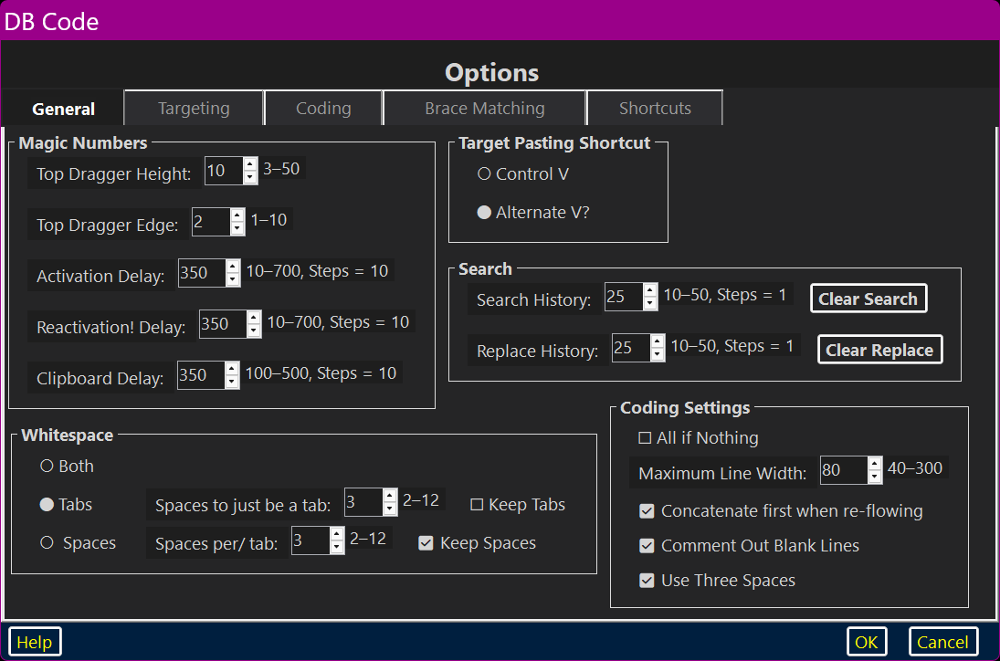
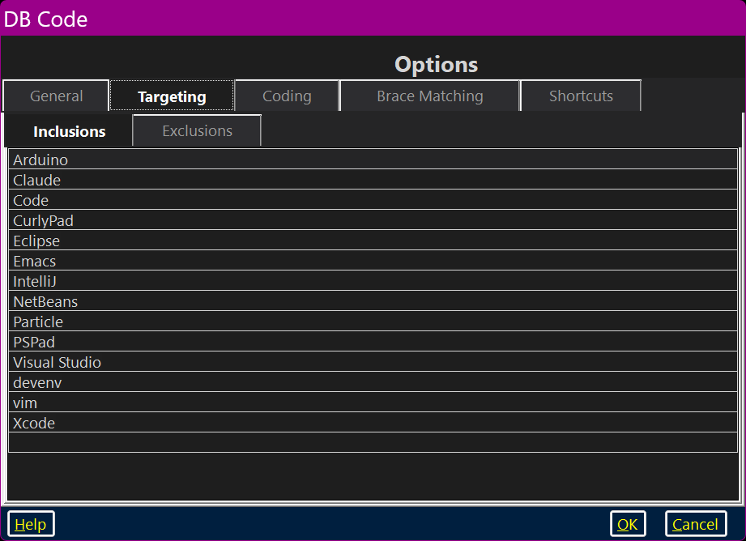
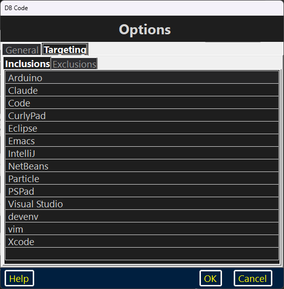
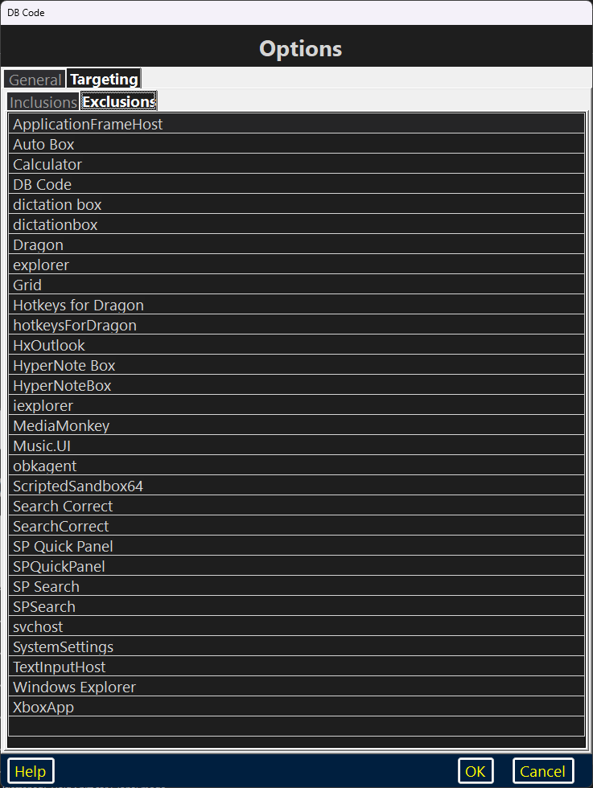
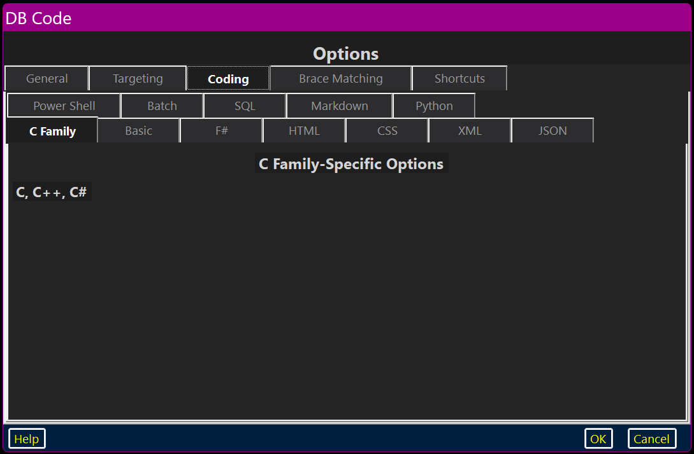
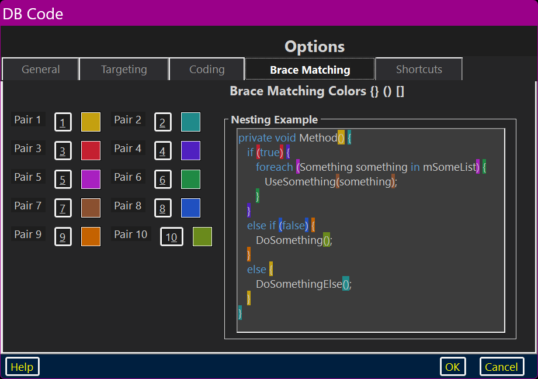
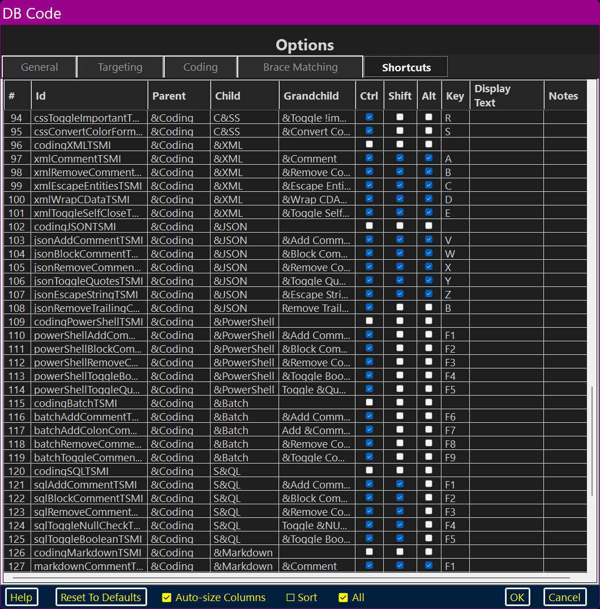
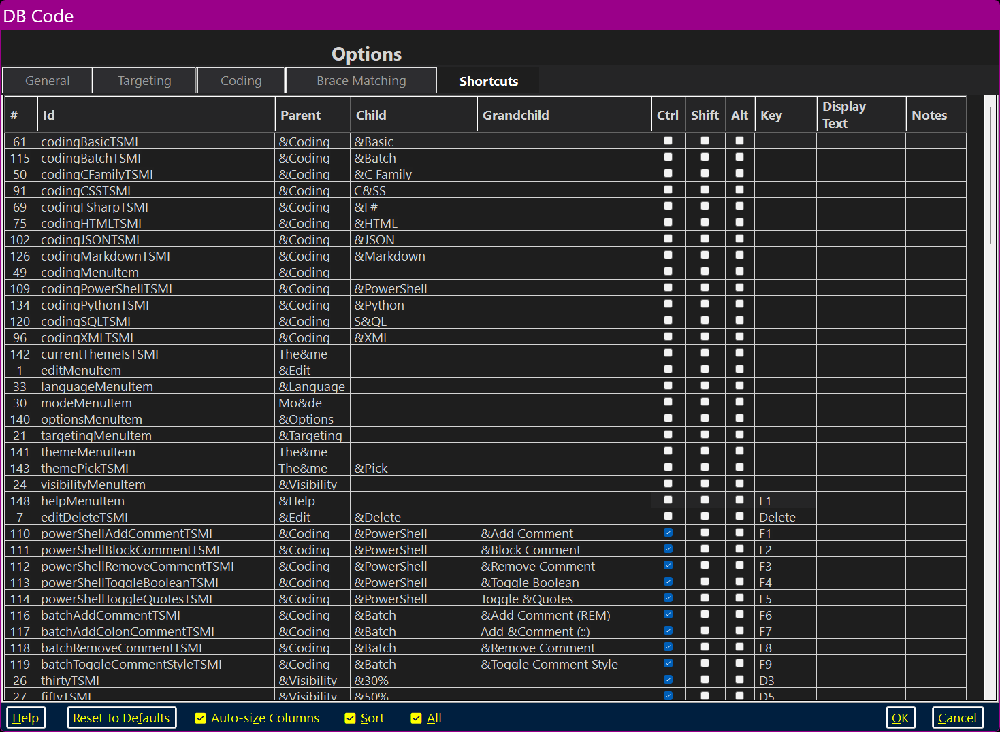
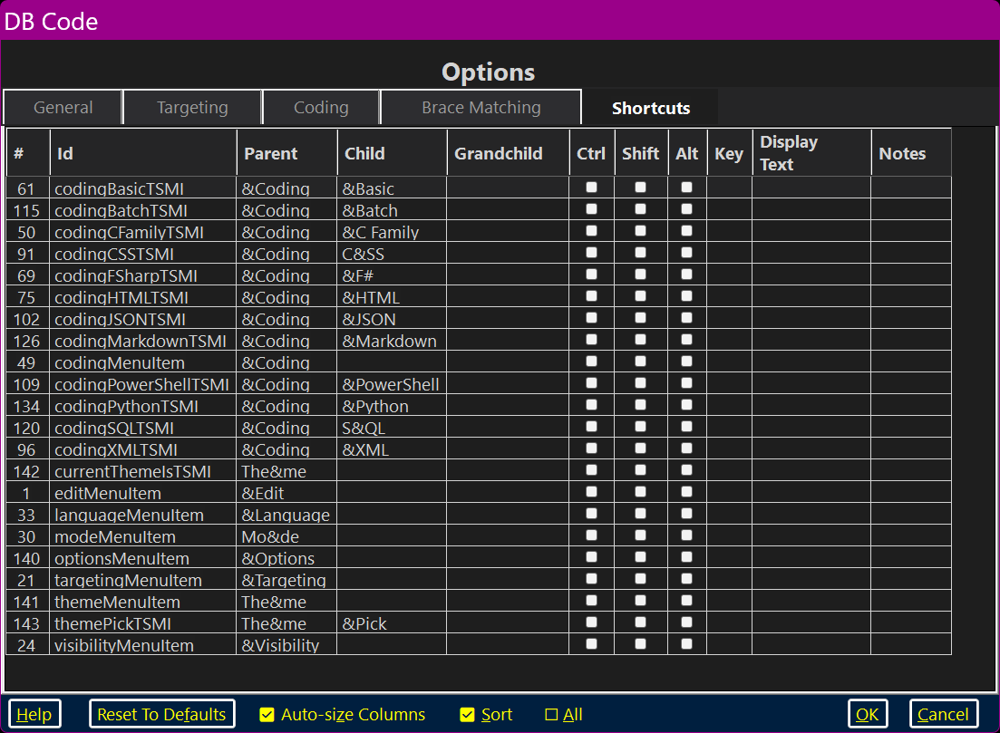

DBCode’s Options Dialog’s Bottom Panels:
Default Bottom Panel:

Shortcuts Bottom Panel:
This Options dialog was specifically designed to be Dragon–friendly. It has non–Theme–related settings.

The Options dialog has five pages: “General”; “Targeting”; “Coding”; “Brace Matching” and “Shortcuts”
The “Coding” page does not ship with any content — it is designed for the user to add language–specific settings, as desired.
The “General” Page
The General page has five GroupBoxes: “Magic Numbers”; “Target Paste Shortcut”; “Search”; “Whitespace” and “Coding Settings”.
The “Magic Numbers” Section
The “magic numbers” are numeric values that the user sets with the options dialog. There are five of these; two of them are “DraggablePanel”–related: “Top Dragger Height:” and “Dragger Edge Size:”; three of them are delay–related: “Activation Delay:”; “Reactivation Delay!:” and “Clipboard Delay:”.
There is a pair of “DraggablePanel”–related settings: “Top Dragger Height:” and “Dragger Edge Size:”.
The “Top Dragger Height:” setting controls the height of the area with which the user may grab the DraggablePanel in order to move it around. This is similar to a Form’s Title bar.
The “Dragger Edge Size:” setting controls the width of the side borders and the height of the bottom border (with which the user may grab the DraggablePanel by these borders as well in order to move it around.
There is a trio of delay–related settings: “Activation Delay:”; “Reactivation Delay:” and “Clipboard Delay:”.
Windows takes a bit of time preparing things “under the hood” when it comes to shuffling Forms around in the Z–Order and dealing with the Clipboard. Some versions of Windows and some computer hardware get these tasks done quickly, others not so much. While the defaults will probably work on most computers, some older laptops might need somewhat longer values. Some newer hardware might be able to get by with much shorter values. If the user finds themselves becoming impatient with the responsiveness of transferring texts to the target, one might start trimming these values down a bit.
The “Activation Delay:” setting controls the timing delay.
The “Reactivation Delay:” setting controls the timing delay.
The “Clipboard Delay:” setting controls the timing delay.
All five of these consist of a cluster of prefix buttons with their associated NumericUpDown and a suffix label specifying the range and (if not 1) the step value.
The “Whitespace” Section
The “Whitespace” values control the differentiation between tabs and spaces. It has three RadioButtons: “Both”; “Tabs” and “ Spaces”.
Note that there is a virtually invisible blank space in front of the word “Spaces”; It is used to assign the RadioButton an accelerator key. Something similar has been done with the word “Reactivation!”, the “!” is just there to be used as an accelerator key.
The “Both” RadioButton, when checked, allows the user to use both tabs and spaces.
The “Tabs” RadioButton, when checked, enforces the use of tabs instead of multiple spaces. When the syntax highlighter runs, all instances of multiple spaces will be contracted into tabs as defined by the “Spaces To Just Be A Tab:” value.
The “Spaces” RadioButton, when checked, enforces the use of spaces instead of multiple tabs. When the syntax highlighter runs, all instances of tabs will be expanded into spaces as defined by the “Spaces Per/ Tab:” value.
Sometimes it is incredibly difficult to come up with unique accelerator keys; “Spaces To Just Be A Tab:” uses the rare letter “J” and “Spaces Per/Tab:” uses the redundant “/” for just this reason.
The “Target Pasting Shortcuts” Section
The “Target Pasting Shortcuts” values control the method used for transferring the text to the target application. “Ctrl+v” (“Control V”) is by far the most common “pasting shortcut”; however “ALT+v” (“Alternate V?”) is used occasionally so the option is allowed.
The “Search” Section
The “Search” values control how many items are remembered for the Find/Search ComboBoxes (they share a common list) and how many items are remembered for the Replace ComboBox. Each has a Clear Button which empties out the respective list. Both of these are clusters of prefix buttons with their associated NumericUpDown and a suffix label specifying the range and (if not 1) the step value.
The “Code Settings” Section
The “Code Settings” are not specific to any one coding language. These are values which are considered when performing many of the Coding menu actions. There are five of them: “All If Nothing”; “Maximum Line Width”; “Concatenate First When Re-flowing”; “Comment Out Blank Lines” and “Use Three Spaces”.
The “All If Nothing” CheckBox, when checked, selects everything in the text box if nothing is selected.
The “Maximum Line Width” sets the value for how wide (in characters) a comment line may be before being split.
The “Concatenate First When Re-flowing” CheckBox, when checked, forces multiline comments to be forced into a single line, with all commenting notation stripped, before re-flowing according to the maximum width. Appropriate commenting notation is added as needed (depending on the comment style: /*C and C++*/ or //C++) after re-flowing.
The “Comment Out Blank Lines” CheckBox, when checked, forces blank lines to be included in multiline comments.
//Some Code
//some other code
versus commented out:
//Some Code
//
//some other code
The “Use Three Spaces” CheckBox is specific to “summary blocks” and XML documentation comments (these will start with “///” and typically have two or three spaces before any text). The default is to use two spaces but, when checked, three spaces will be enforced.
The “Targeting” Page

The “Inclusions” And “Exclusions” Pages
The “Targeting” page has a TabControl of its own with two pages: “Inclusions” and “Exclusions”.
The “Inclusions” Page

The “Inclusions” page displays the user–editable list of IDEs and other potential target applications which, when open, will always be offered as potential target windows.
The “Exclusions” Page
The “Exclusions” page displays the user–editable list of applications which, when open, will never be offered as potential target windows.

It is important to note that the name that the application exposes to Windows is not always even vaguely related to the name which it commonly goes by. “Visual Studio” uses the name “devenv”; “Visual Studio Code” uses the name “code”.
These name comparisons are not case–sensitive and they do not need to be “complete” — “something” will match “Something else”.
The “Coding” Page

The “Coding” Page in itself has an embedded TabControl with twelve pages of its own: “C Family”; “Basic”; “F#”; “HTML”; “CSS”; “XML”; “JSON”; “Power Shell” (PowerShell); “Batch”; “SQL”; “Markdown” and “Python”.
As shipped, DB Code does not populate any of these pages with controls. This is left for the programmer–user to implement as they see fit. There are a few generic “C Family”–related settings on the Options’ General page.
The “Brace Matching” Page

The Brace Pair Color Specifiers
There are ten labeled, numbered color swatches, one for each level of indented braces. All colors are used sequentially irrespective of the type of enclosure — {} () []. The “Nesting Example” uses pseudo–C# code to display the results.
Note that the initial colors have been chosen to work well across any shade of gray (from pure white to complete black). The order was also carefully arranged so that no two sequential colors share a common shade.
The “Shortcuts” Page

The Default “Shortcuts” View
The default “Shortcuts” view (seen in the above image) has columns auto–sized, has the default sort — linear menu order, with all data displayed.
The Sorted “Shortcuts” View

The sorted “Shortcuts” view forces all of the data rows to be sorted — first on the Control (“Ctrl”) column, second on the “Shift” column, third on the Alternate (“Alt”) column and then on the “Key” Column.
The Restricted “Shortcuts” View

The restricted “Shortcuts” view displays only those menu items which should appropriately have a keyboard shortcut but do not.
In restricted view, “Shortcuts” ignores the “Sort” status — by definition, all modifiers are unchecked and no keys have been assigned. The user is free to sort on any single column as desired.
Bottom Buttons
When the “Shortcuts” page is active, there is a “Reset To Defaults” Button and three CheckBoxes: “Auto–size Columns”; “Sort” and “All”.
“Reset To Defaults” sets all menu strings (including their default accelerators), and their keyboard shortcuts back to default.
“Auto–size Columns”, when checked, forces all columns to always auto–size. When not checked, all columns may be sized manually and those sizes will be remembered across launches.
“Sort”, when checked, forces all of the data rows to be sorted — first on the Control (“Ctrl”) column, second on the “Shift” column, third on the Alternate (“Alt”) column and then on the “Key” Column. This might make it easier to see where there are unassigned keyboard shortcuts available.
“All”, when checked, forces all data to be displayed. When not checked (restricted view), only those menu items which should appropriately have a keyboard shortcut and do not are displayed.
This Shortcuts data is maintained in a file in the user’s Documents folder.
C:\Users\[USER_NAME]\Documents\DBCode_Data\shortcuts.tsv
(Replace “[USER_NAME]” with the appropriate username)
This is a “Tab Separated Variable” file which can be read and modified with any spreadsheet application.
The Bottom Panels
The Options Default “Bottom Panel”
Options’ default “Bottom Panel” has the typical three buttons: “Help”; “OK” and “Cancel”.
“Help” brings up this page in the user’s preferred browser.
“OK” closes this dialog and makes all settings conform to the choices made by the user.
“Cancel” closes this dialog and discards any settings changes made by the user.
The Options Shortcuts “Bottom Panel”
Options’ Shortcuts “Bottom Panel” shares the same three buttons: “Help”; “OK” and “Cancel”. In addition, it has the “Reset To Defaults” Button and three CheckBoxes: “Auto–size Columns”; “Sort” and “All”. These are described here.